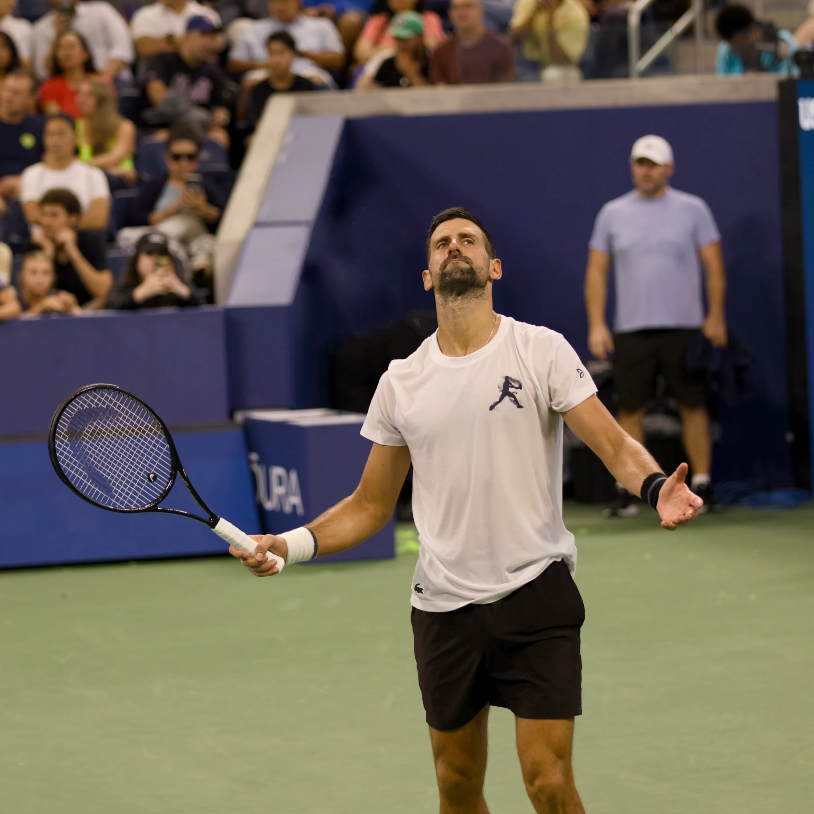

Novak Djokovic transformou o China Open em um dos territórios mais particulares de sua carreira. Nesta terça-feira, 6 de outubro de 2026, o sérvio conquistou pela sétima vez o ATP 500 de Pequim ao superar Alex de Minaur em uma final encerrada por abandono do australiano. Mais importante do que uma taça isolada, porém, foi a preservação de uma estatística que atravessa diferentes fases da carreira: 34 partidas disputadas no torneio e 34 vitórias.
Djokovic venceu o primeiro set da decisão por 7/6, com 7-3 no tie-break. Após a parcial, os dois jogadores receberam atendimento médico. De Minaur voltou à quadra, confirmou o primeiro game do segundo set, mas não conseguiu continuar por causa de um problema na região da virilha.
O desfecho incomum não diminui o tamanho do número construído por Djokovic na capital chinesa. Depois de 11 anos longe do torneio, ele voltou e fez exatamente o que havia realizado em todas as outras participações: terminou a semana com o troféu.
Veja os melhores momentos da partida abaixo:
Uma história sem derrotas no China Open
Poucos torneios representam tão bem o domínio de Novak Djokovic em quadra dura quanto o China Open. A sequência começou em 2009, quando o sérvio derrotou Marin Cilic por 6/2 e 7/6 na final e conquistou pela primeira vez o título em Pequim.
Em 2010, Djokovic defendeu a taça diante do espanhol David Ferrer.
Em 2012, retornou ao torneio e manteve a série perfeita. Na decisão, superou Jo-Wilfried Tsonga por 7/6 e 6/2. Naquele momento, já somava três participações, três títulos e 14 vitórias sem derrota em Pequim. Era o começo de uma relação que deixaria de ser apenas uma boa sequência para se tornar um dos registros mais impressionantes de um jogador em um mesmo ATP 500.
O título de 2013 teve um peso especial. Rafael Nadal havia recuperado a liderança do ranking mundial naquela semana, mas Djokovic venceu o espanhol por 6/3 e 6/4 na final. O sérvio não enfrentou sequer um break point durante a decisão. Além da taça, aquela vitória ganhou relevância dentro de uma das maiores rivalidades da história do tênis.
A relação entre os dois atravessa boa parte da trajetória de Novak Djokovic entre títulos, recordes e grandes rivalidades, mas Pequim se consolidou como um dos locais em que o sérvio construiu algumas de suas atuações mais dominantes.
A final de 2014 virou símbolo do domínio
Se existe uma partida capaz de resumir o nível alcançado por Djokovic no China Open durante seu auge, a final de 2014 ocupa posição privilegiada.
Diante de Tomas Berdych, então um dos principais jogadores do circuito, Djokovic venceu por 6/0 e 6/2 em pouco mais de uma hora. O sérvio chegou a ficar a apenas um ponto de aplicar um 6/0 e 6/0. Berdych conseguiu evitar o placar impactante, mas não a quinta conquista no torneio.
A vitória levou o sérvio a 24 jogos e 24 triunfos em Pequim. Djokovic classificou aquela atuação como uma das melhores finais que havia disputado até então.
Um ano depois, a sequência ganhou mais um capítulo emblemático. Djokovic voltou a encontrar Nadal na decisão de 2015 e venceu por 6/2 e 6/2. Era o sexto título em seis participações, além da 29ª vitória consecutiva no torneio.
O retorno após 11 anos
A dimensão histórica do título de 2026 aumenta quando se considera o intervalo entre as duas últimas participações.
Djokovic não disputava o China Open desde 2015. Quando decidiu voltar a Pequim, encontrou um circuito completamente diferente daquele de sua última conquista, com uma nova geração estabelecida entre os principais jogadores do mundo. Mesmo assim, a sequência construída mais de uma década antes permaneceu intacta.
Na estreia de 2026, derrotou Nuno Borges por 6/3 e 7/6 (7-2) e alcançou sua 30ª vitória no torneio.
Na partida seguinte, passou por um teste muito mais duro contra o chinês Bu Yunchaokete: perdeu o primeiro set, mas reagiu para vencer por 4/6, 7/6 (7-2) e 6/2.
Nas quartas de final veio um dos resultados mais importantes da campanha. Contra Alexander Zverev, Djokovic perdeu novamente o primeiro set, mas virou por 4/6, 6/4 e 6/4. A vitória ampliou o retrospecto perfeito em Pequim para 32-0.
Na semifinal, o adversário foi Daniil Medvedev. Djokovic liderava por 7/5 e 5/3 quando o russo foi desclassificado depois de atingir um espectador com uma bola lançada em direção à arquibancada. Com isso, o sérvio chegou à decisão com 33 vitórias consecutivas no China Open.
A vitória sobre De Minaur completou a campanha e levou o número para 34-0.
O dado que melhor explica a dimensão da relação entre Djokovic e o China Open não é apenas o número de troféus. É o fato de jamais ter perdido uma partida de simples no torneio.
Pequim atravessou diferentes versões de Djokovic
A primeira conquista veio quando ele ainda consolidava seu espaço entre os grandes nomes da geração dominada também por Roger Federer e Rafael Nadal. Os títulos seguintes acompanharam sua transformação em número 1 do mundo e protagonista absoluto do circuito.
Em 2013 e 2015, Nadal esteve do outro lado da rede nas finais. Em 2014, Berdych encontrou uma das versões mais dominantes do sérvio. Em 2026, já aos 39 anos, Djokovic voltou ao mesmo torneio depois de 11 anos e encontrou adversários de outra fase do tênis profissional.
A idade, os rivais e o contexto mudaram. O resultado em Pequim, até agora, não.
Título de 2026 também amplia marcas da carreira
A conquista sobre De Minaur representou ainda o primeiro título de Djokovic na temporada de 2026 e o 102º troféu de nível ATP de sua carreira. O resultado também garantiu ao sérvio pelo menos um título de simples pela 21ª temporada consecutiva.
Esses números colocam a conquista dentro de um contexto maior, mas o China Open tem importância própria na biografia esportiva do sérvio. Djokovic venceu Grand Slams, Masters 1000, ATP Finals e outros torneios fundamentais para sua posição na história do tênis. Em Pequim, porém, construiu algo diferente: uma sequência sem derrotas que atravessou quase duas décadas.
Desde a primeira taça em 2009 até o retorno campeão em 2026, Pequim deixou de ser apenas mais uma parada da temporada asiática para se tornar um dos capítulos mais singulares da carreira de Novak Djokovic. No China Open, até agora, o sérvio entrou em quadra 34 vezes e saiu vencedor em todas elas.